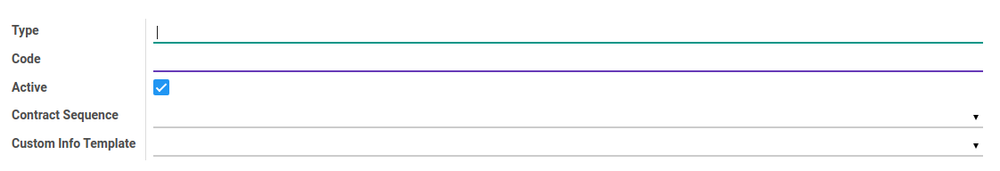
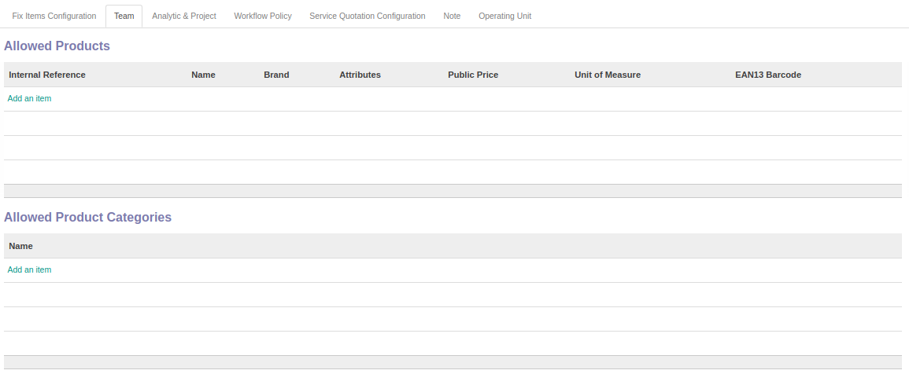
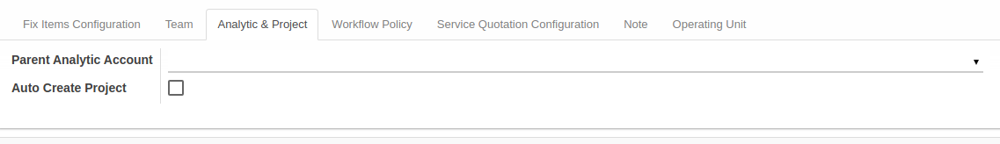
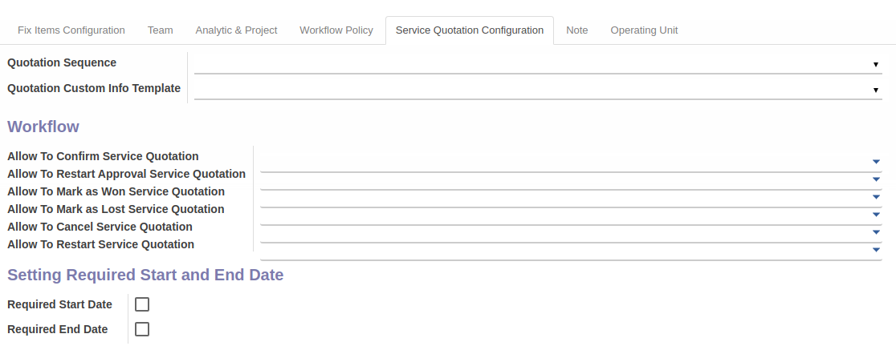
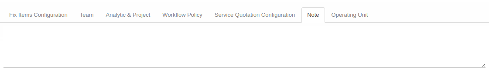
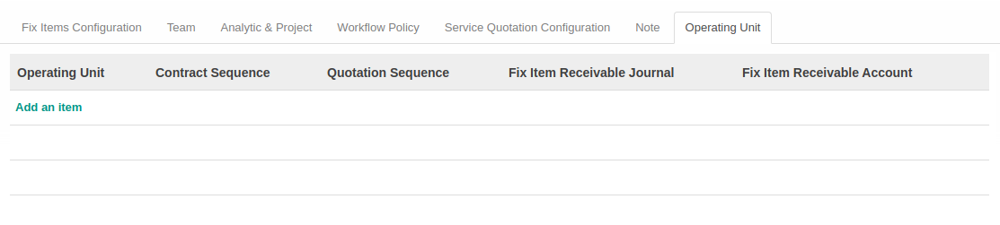

Penjelasan Service Type
Informasi pada Service Type dibagi menjadi beberapa bagian, yaitu:
- Header
- Tab Fix Items Configuration
- Tab Team
- Tab Analytic & Project
- Tab Workflow Policy
- Tab Service Quotation Configuration
- Tab Note
- Tab Operating Unit
HEADER

Type
Tipe Service.
Code
Kode Service.
Active
Penanda status Service aktif.
Contract Sequence
Sequence yang digunakan.
Custom Info Template
Template yang digunakan.
TAB FIX ITEMS CONFIGURATION


Receivable Journal
Receivable Journal yang digunakan.
Receivable Account
Receivable Account yang digunakan.
Allowed Product
Tabel allowed product akan berisi produk yang diperbolehkan untuk digunakan.
Allowed Product Categories
Tabel allowed product categories akan berisi kategori produk yang diperbolehkan untuk digunakan.
TAB TEAM

Allowed Product
Tabel allowed product akan berisi produk yang diperbolehkan untuk digunakan.
Allowed Product Categories
Tabel allowed product categories akan berisi kategori produk yang diperbolehkan untuk digunakan.
TAB ANALYTIC & PROJECT

Parent Analytic Account
Parent Analytic Account yang digunakan.
Auto Create Project
Penanda project dibuat secara otomatis.
TAB WORKFLOW POLICY

Allow To Confirm Contract
Kebijakan untuk mengkonfirmasi kontrak.
Allow To Restart Approval Contract
Kebijakan untuk merestart persetujuan kontrak.
Allow To Force Start Contract
Kebijakan untuk memaksa memulai kontrak.
Allow To Force Finish Contract
Kebijakan untuk memaksa menyelesaikan kontrak.
Allow To Terminate Contract
Kebijakan untuk memaksa mengakhiri kontrak.
Allow To Cancel Contract
Kebijakan untuk membatalkan kontrak.
Allow To Restart Contract
Kebijakan untuk merestart kontrak.
TAB SERVICE QUOTATION CONFIGURATION

Quotation Sequence
Quotation Sequence yang digunakan.
Quotation Custom Info Template
Quotation Custom Info Template yang digunakan.
Allow To Confirm Service Quotation
Kebijakan untuk mengkonfirmasi service quotation.
Allow To Restart Approval Service Quotation
Kebijakan untuk merestart persetujuan service quotation.
Allow To Mark As Won Service Quotation
Kebijakan untuk menandakan service quotation telah menang.
Allow To Mark As Lost Service Quotation
Kebijakan untuk menandakan service quotation telah kalah.
Allow To Cancel Service Quotation
Kebijakan untuk membatalkan service quotation.
Allow To Restart Service Quotation
Kebijakan untuk merestart Service Quotation.
Required Start Date
Penanda diperlukan tanggal mulai.
Required End Date
Penanda diperlukan tanggal selesai.
TAB NOTE

Note
Catatan tambahan.
TAB OPERATING UNIT

Operating Unit
Nama operating unit.
Contract Sequence
Contract Sequence yang digunakan.
Quotation Sequence
Quotation Sequence yang digunakan.
Fix Item Receivable Journal
Fix Item Receivable Journal yang digunakan.
Fix Item Receivable Account
Fix Item Receivable Account yang digunakan.